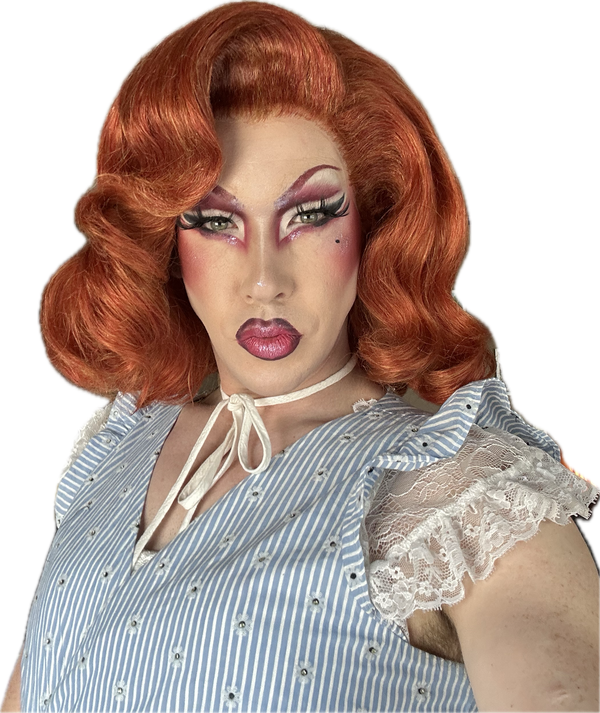
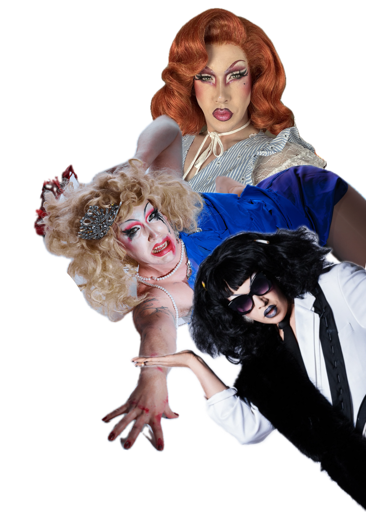
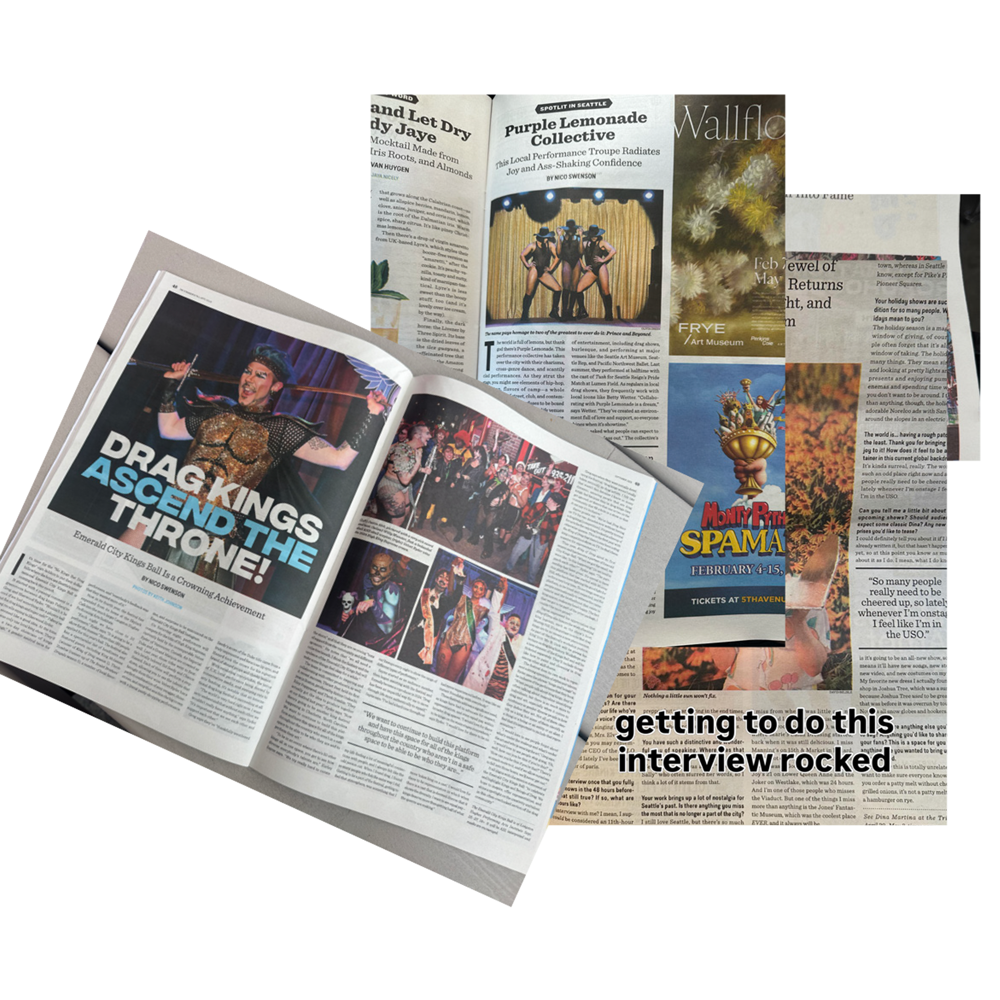
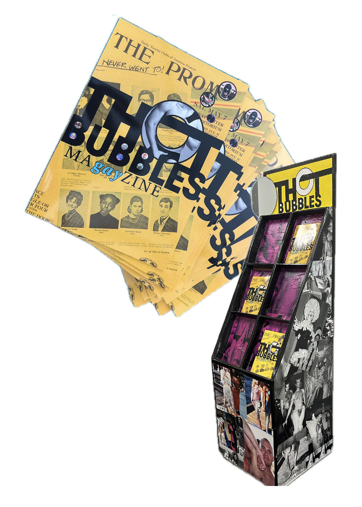

Portfolio Flipbook
Flip to begin →

Hi, my name is Nico Swenson, a local drag artist, writer, and designer. Most people know me by my alter ego Miss Texas 1988. As Texas you can find me performing, hosting, and producing events around the city.
In or out of drag I am a political advocate and community builder. As a writer I cover local arts and culture. As a designer, I strive to use my art to help other people's visions be realized, especially in ways that help promote a creative, funcional society for all.
Currently you can find me rampaging around town in my Queen form Miss Texas 1988 or my King side JohnJacobJingleHeimerSH!T as a cast member of:
When not at those locations, I've been spotted performing at Lumen Field, The Space Needle, Showbox Downtown and SODO, The Seattle Art Museum, and even as a painting at SeaTac Airport.
Oh! I also won a tv show... Check out Camp Wannakiki Season 5 on OutTV!


While Texas bops around in front of the camera as a reporter for The Stranger's social media, Nico covers local art as a regular columnist.
I've had the honor of interviewing local celebs like Dina Martina, covering the successes of our home town champions like Jane Don't, and highlight the city's extreme talent from dance, to puppetry.
My most recent adventure has been tackling a degree in graphic design through Seattle Central Creative Academy. Through the program I have gained new skills and interests in print, branding, systems thinking, motion graphics, and really waky photoshopping.


One of my proudest achievements in design was creating and producing a 60 page magazine to highlight PNW queer culture past and present. With co-editor D. Smith, Thot Bubbles combines poetry, painting, interviews with Seattle icons, essays on queer landscapes, and interactive twists to put your own self into the pages.
Over the course of 9 months, my role was to cultivate detailed moodboards, style guides, and well researched content to build an expressive yet cohesive product. With careful precision, many rounds of edits, and funding from Seattle Office of Arts and Culture, Thot Bubbles coalesced into printed form.
Ultimately, a launch party took place that tangibly manifested the ma(gay)zine's goal: To unite contemporary faggotry with the queer history that originated it.
